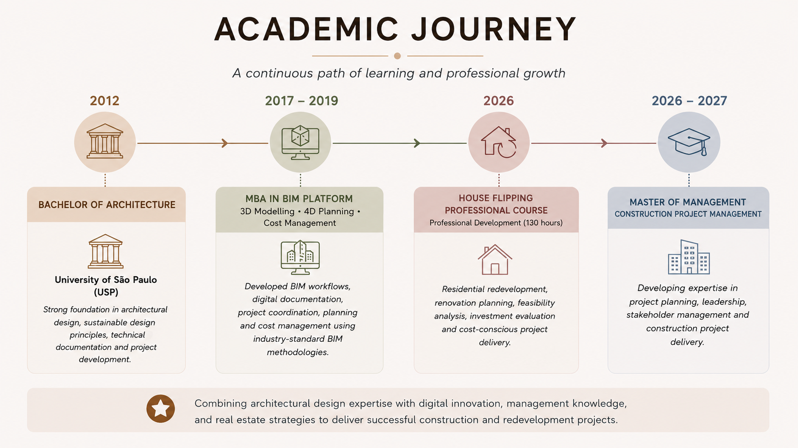
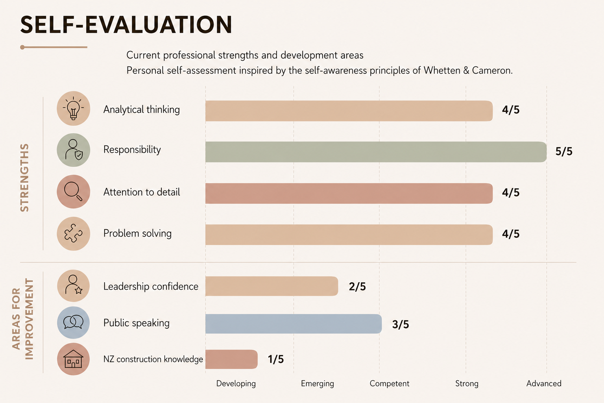
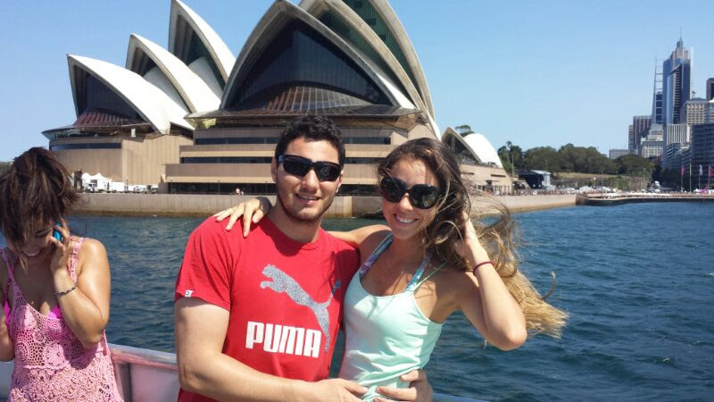
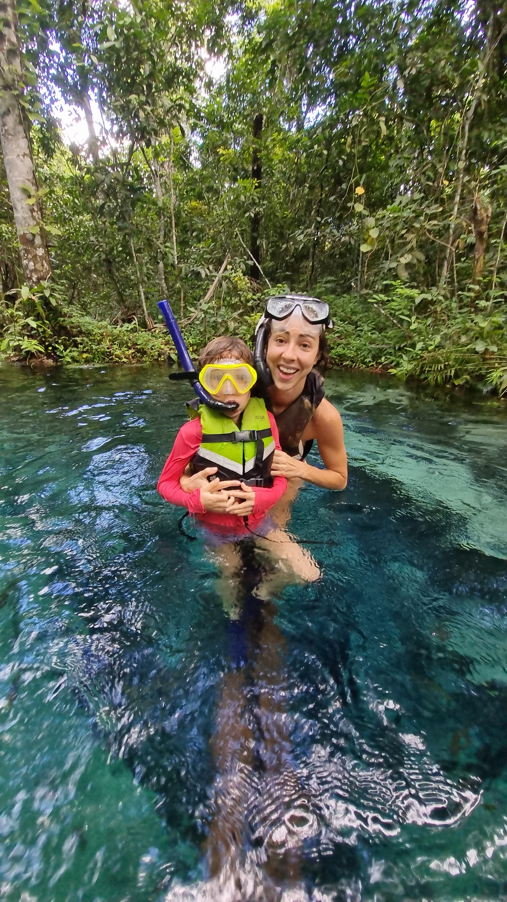
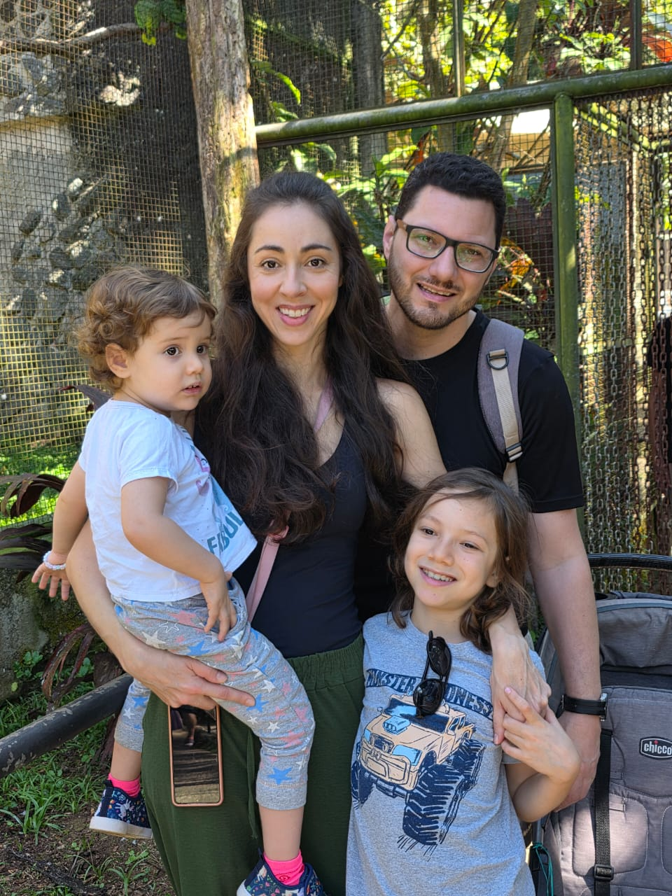
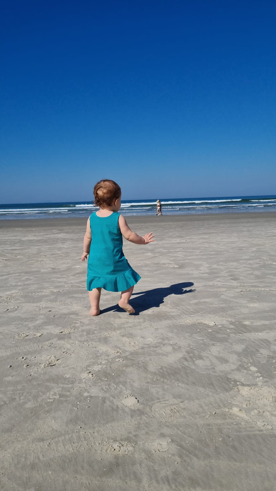

FAU-USP & OTEC
Studied Architecture and Urbanism while supporting sustainable building certification and LEED projects in OTEC's Energy Efficiency Department.

Get to know me
A journey shaped by design, sustainability, technical coordination and a commitment to purposeful project delivery.
My professional journey began while studying Architecture and Urbanism at the University of São Paulo (FAU-USP). During this time, I worked in the Energy Efficiency Department at OTEC, supporting sustainable building certification projects, including LEED, which strengthened my understanding of environmental performance.
Each stage of my career has expanded my perspective—from architectural design and sustainability to technical coordination and project delivery. This progression led me to pursue a Master of Management (Construction Project Management) at ICL Graduate Business School, preparing me for a career in New Zealand's construction industry.
More than twelve years of experience across Brazil and Australia, now evolving toward construction project management in New Zealand.
Studied Architecture and Urbanism while supporting sustainable building certification and LEED projects in OTEC's Energy Efficiency Department.
Gained architectural internship experience in an international environment and broadened my understanding of professional practice and project delivery.
Developed bespoke joinery solutions for high-end residential projects, working closely with architects and clients.
Developed primarily residential projects from concept design through detailed technical documentation, strengthening planning, coordination and technical skills.
Pursuing construction project management expertise to combine architectural knowledge with leadership, stakeholder management and project delivery.
A continuous path of learning and professional growth.

Self-awareness helps turn experience into intentional professional development.

Activities that inspire me, bring balance and create meaningful memories.



